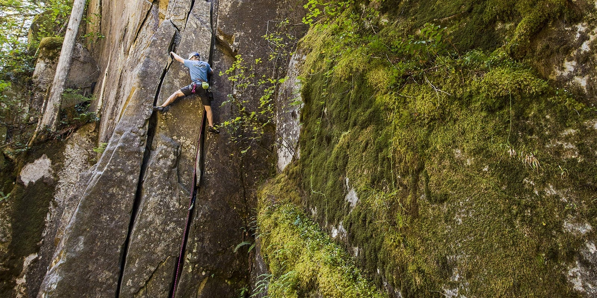
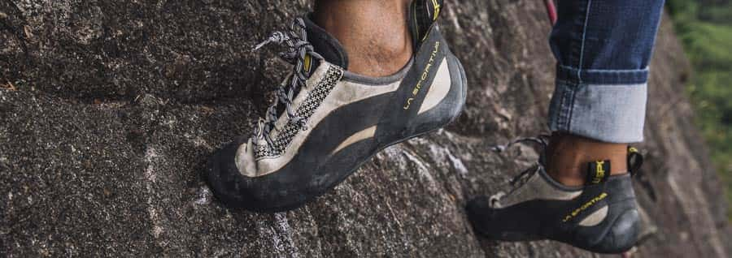
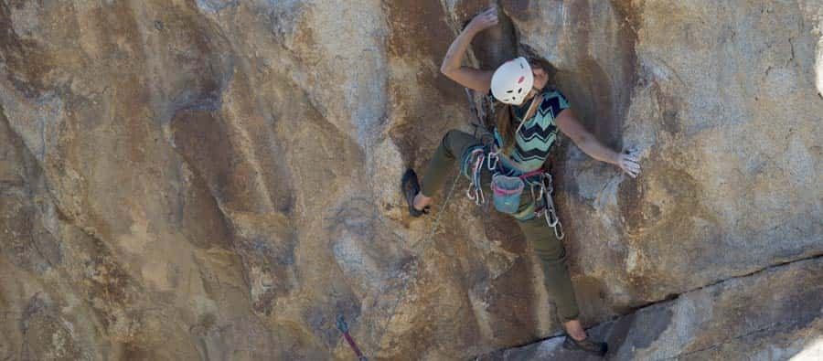
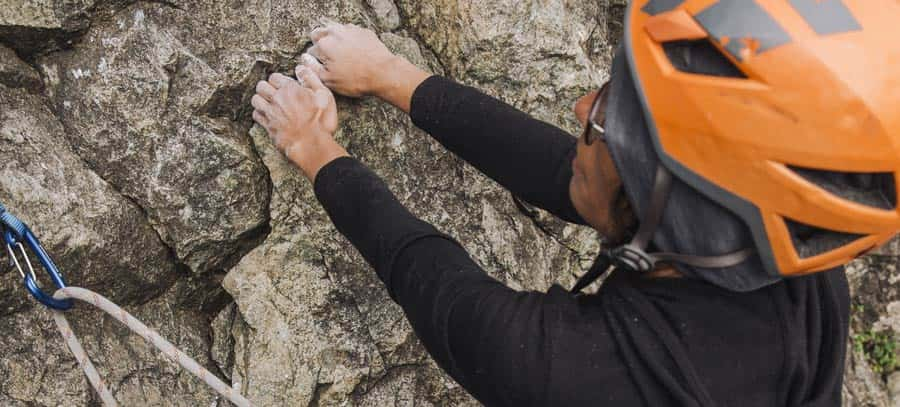

Techniques
- Home
- Climbing Techniques and Moves

Great climbers don’t power their way up a wall, they “technique” their way to the top using a set of moves designed to help them attack specific problems. If you want to become a better climber, hone your technique and movement. And the best way to do that is by climbing every chance you get.
Improving technique involves learning principles of movement and balance. Then you can concentrate on nailing the nuances of individual moves.
It’s hard to overstate the importance of good technique. When you focus on technique, moves start to click into place and you find yourself floating up routes that used to be too difficult. This section covers some key concepts:

Feet are the foundation of climbing. Lots of beginners try to pull themselves up the wall and quickly tire out. Think about climbing a ladder—you don’t pull yourself up, you step up, and use your arms and hands for balance. It’s the same in climbing.
Basic techniques for using your feet are edging and smearing:
Edging is exactly what it sounds like: You step on a hold with the rubber on the edge of your shoe. You can use the inside edge, where your big toe offers stability on smaller holds, or you can use the outside edge. Your choice depends on the direction you need to move in order to get on or off the hold.
Smearing happens when you don’t have an actual foothold, so you rely on your shoe’s rubber for friction against the rock. Smearing is useful in slab climbing, when you’re on low-angle rock without many defined footholds.
When you smear, look for small depressions or protrusions that will give a little extra friction. You can also flatten out the angle for slightly better purchase.
Keep the following footwork tactics in mind when climbing:
Try to keep your feet directly below you. Keep an eye out for footholds in good positions, so you can maintain better balance.
Look for foot placements even more than for handholds.
Once you set your foot, keep it still. You’ll have a better chance of staying on the hold as you make your next move.
Keep your heel low so you have plenty of contact with the wall. With a high heel less rubber is on the rock, reducing friction and increasing the odds that you’ll lever your foot off the wall when you make your next move.

When you’re lucky enough to have a line of jugs leading straight up the wall, climbing is pretty intuitive. When you’re on a route where you have to move and pull in different directions, though, you have to use your body to maintain balance.
When you have to use a hold that’s out to the side, you can’t pull straight down. So you need to find a way to counter the force of that side pull, so you don’t lose balance and barn-door off the wall.
Balancing tactics:

Learn how to use less energy and how to give your muscles a break as you climb:
Straight arms are happy arms. Straightening your arm allows your skeleton to take most of the weight, not your muscles. Even a slight bend in your elbow means your muscles are working to hold it there.
Focus on your hips. Beginners often keep hips squared to the wall, which can feel very stable, but it pushes your weight away from the wall and stresses your muscles.
Try to keep one hip pushed up against the wall. That helps keep your weight over your feet and lets you lean back with straight arms.
Having a hip close to the wall brings your shoulder closer. Your weight is over your feet, decreasing your chances of peeling off. A close shoulder also changes the angle of pull on handholds, making them easier to grip.
Good climbers climb with their eyes. Keep your eyes on the wall to look for holds that let you take a quick rest. Don’t just focus on the chalk marks.
When you find a good rest, use it. Allow your pulse to slow down and shake out your arms so they don’t get pumped later.